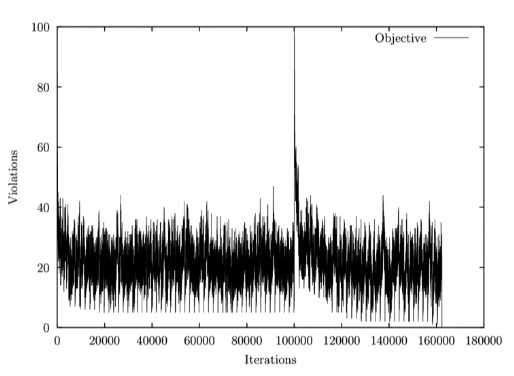
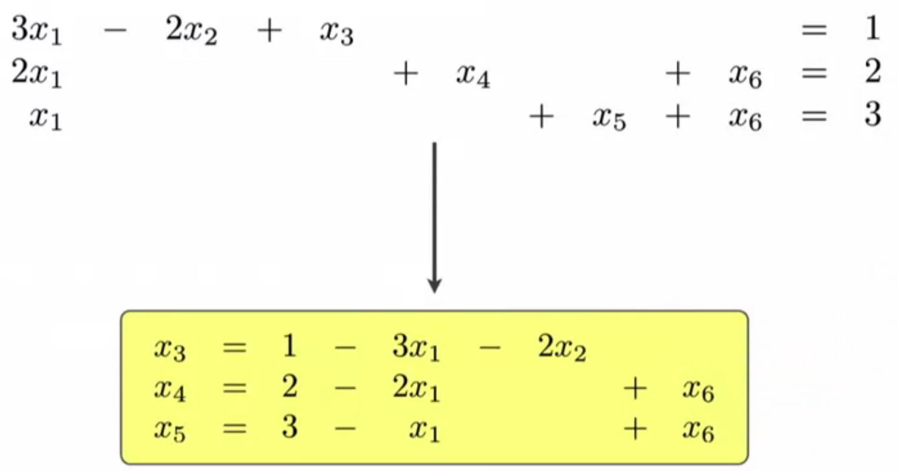

Discrete Optimization
- Some Problems
- General Techniques
- Constraint Programming
- Linear Constraints over Integers
- Global Constraints
- Other Kinds of Constraints
- Dual Modelling
- Arc consistency / domain consistency
- Binary Knapsack (impl w/ CP)
- Alldifferent Constraint (impl w/ CP)
- Search
- Variable-Value Labeling
- Value-Variable Labeling
- Domain Splitting
- Symmetry Breaking during Search
- Randomization and Restarts
- Local Search
- Swap Neighborhood
- x-OPT Neighborhood for TSP
- Local Search for Graph Coloring
- Connectivity
- General Local Search Procedure
- Max-Min Conflict
- Random Walk
- Iterated Local Search
- Metropolis Heuristic
- Simulated Annealing
- Tabu Search
- Other Metaheuristics
- Linear Programming
These are my lecture notes on Professor Pascal Van Hentenryck's excellent course on discrete optimization.
Some Problems
SEND+MORE=MONEY Problem: Assign a unique integer digit to each character in the string such that adding the digits of the characters of "SEND" and "MORE" results in "MONEY" as below. SEND
+ MORE
= MONEY
Magic Series: An integer series \((S_0, \ldots, S_n)\) is magic if \(S_i\) represents the number of occurrences of \(i\) in the series.
Balanced Incomplete Block Designs (BIBDs): Input: \((v, b, r, k, l)\); Output: a \(v \times b\) binary matrix with exactly \(r\) ones per row, \(k\) ones per column and a scalar product of any two rows being equals to \(l\).
Many problems (like this one) naturally exhibit symmetries (for example variable symmetries or value symmetries). Exploring such symmetrical parts of the search space is useless. Therefore impose symmetry-breaking constraints.
For variable symmetries, impose an ordering on the variables (e.g. lexicographic).
The Perfect Square Problem: Given \(n\) squares with specific sizes, put them all together into a large square of a given size.
The Magic Square Problem: Create a matrix of individually unique numbers such that all rows, columns, and diagonals sum to the same number.
Scene Allocation: Schedule actors to minimize total cost:
- an actor plays in some of the scenes
- at most \(k\) scenes can be shot per day
- each actor is paid by the day
Days are symmetric: Only consider scheduling the first scene on the first day, the second scene on either the first day or the second day,..
Warehouse Location Problem: Given a set of warehouses \(W\), each warehouse with a fixed cost \(f_w\), a set of customers \(C\) and a transportation cost \(t_{w, c}\) from warehouse \(w\) to customer \(c\), find which warehouses to open to warehouse and transportation costs.
Symmetric TSP: Given a set of cities and a symmetric distance matrix containing the distances between any two cities find a tour of minimal cost that visits each city exactly once.
Car Sequencing: Given k classes/configurations of cars (each consisting of different options) and a demand number and production capacity for each class, find a schedule according to which cars can be produced (meeting demand numbers and capacity constraints).
For CP: Add redundant constraint to ensure optimizer doesn't wait to long to start scheduling a particular category (e.g. doesn't wait until there are only 8 slots left to schedule 15 cars).
The Knapsack Problem: Given items with values \(v_1, \ldots ,v_n\) and weights \(w_1, \ldots, w_n\) and a knapsack with capacity \(K\), find the subset of items with maximum total value but total weight less than \(K\).
Decision variable \(x=(x_1, \ldots, x_n)\) where \(x_i = 1\) means that the item is selected and \(x_1=0\) means that the item is not selected. The solution space size is therefore \(2^n\).
Express problem constraints in decision variables: \(\sum w_ix_i\le K\)
Objective function: \(\sum v_ix_i\) $$ \text{maximize } \sum v_ix_i\\\text{subject to } \sum w_ix_i\le K \text{ and } x_i\in\{0, 1\} $$
General Techniques
Dynamic Programming
Bottom up - divide and conquer approachFor the knapsack problem:
\(O(k, 0) = 0\)
\(O(k, j) = \max(O(k, j-1), v_j + O(k-w_j, j-1))\) if \(w_j \le K\)
\(O(k, j) = O(k, j-1)\) otherwise
→ then trace back to find decision variable.
Complexity: \(\mathcal{O}(Kn)\) but since \(\log(K)\) bits are needed to represent \(K\) the algorithm is actually exponential in \(K\) (pseudo polynomial).
Branch and Bound
Create exhaustive search-tree but do not expand branches whose admissible (optimistic) estimate is worse then the best already found solution.Find such an optimistic estimate through a relaxation of the problem. For example for the Knapsack problem we could remove the weight constraint \(K\) or allow fractional items to be included \(0 \le x_i \le 1\) (the latter one is a linear relaxation).
Depth First Search: always select the deepest node to expand, space efficient (depth of the search tree)
Best First Search: Always select the node with the best optimistic estimate, bad worst case space complexity (may have to keep the entire search tree in memory)
Limited/Least Discrepancy Search: quickly probes parts of the search space, space/time complexity depends on implementation, space complexity somewhere between DFS and Best FS.
Constraint Programming
Constraint programming is a- branch and prune methodology
- complete method not a heuristic (always find optimal solution)
How to:
- choose the decision variables
- express constraints in terms of these variables
- use constraints to reduce the set of values each variable can take
- make a choice when no more deduction can be performed
What does a constraint do?
- Feasibility checking: a constraint checks if it can be satisfied given the values in the domains of its variables \(\exists v_1\in D(x_1), \ldots, v_n \in D(x_n): c(x_1=v_1, \ldots x_n=v_n) = \text{true}\)
- Pruning: if satisfiable, a constraint determines which values in the domains cannot be part of any solution
- every constraint has its own pruning algorithm
Constrained Optimization: Find a solution → Then impose a constraint that the next solution must be better
Linear Constraints over Integers
Consider a constraint $$ a_1x_1 + \ldots + a_nx_n \ge b_1y_1 + \ldots + b_my_m $$ \(a_1, b_j \ge 0\) are constant \(x_i, y_j\) are variables with domain \(D(x_i), D(x_j)\)Feasibility Test: $$ a_1\max(D(x_1)) + \ldots + a_n \max(D(x_n)) \ge b_1\min(D(y_1)) + \ldots + b_m\min(D(y_m)) $$
Pruning: Let,
$$ l = a_1\max(D(x_1)) + \ldots + a_n \max(D(x_n)) \\ r = b_1\min(D(y_1)) + \ldots + b_m\min(D(y_m)) $$ Then by bringing all terms apart from \(a_ix_i\) to the right side of the constraint we get $$ a_ix_i \ge r - (l-a_i\max(D(x_i))) $$ By dividing by \(a_i\) and conservatively rounding we get $$ x_i \ge \left \lceil \frac{r - (l-a_i\max(D(x_i)))}{a_i} \right \rceil\\ $$ and $$ y_j \le \left \lceil \frac{l - (r-b_j\max(D(y_j)))}{b_j} \right \rceil $$
Global Constraints
Global constraints help reduce search space size by being able to detect infeasibility earlier and prune more efficiently than when using individual constraints.- \(\text{alldifferent}(x_1, \ldots, x_n)\) Individual pairwise constraints may be satisfiable while all of them together are not, global constraint detects this earlier. Furthermore individual constraints may not able to prune as much of the search space as global constraints.
- Table constraints
- \(\text{atmost}(\cdots)\)
Other Kinds of Constraints
Basic Element Constraints: Let \(x, y\) be variables, \(c\) an array of integers and a constraint that \(x=c[y]\). Then constraint propagation occurs both ways.Reification: Allow constraints inside constraints (Replace the constraint by a 0/1 variables representing the truth value of the constraint)
Redundant Constraints: Add constraints that are semantically redundant but computationally significant. Redundant constraints do not remove valid solutions but still help reduce the search space further.
E.g. for
Magic Series add constraint sum(series) = len(series)Surrogate Constraints: Add constraints that are combinations of existing constraints. → Can improve pruning
Dual Modelling
Sometimes we have two different models (decision variables + constraints,..) for the same problem and are unsure which to choose. For example in the 8-queens problem we could save the position of the queen for each row, or for each column. We can solve this by using both models at the same time and connecting them with constraints.Arc consistency / domain consistency
After pruning: if value \(v\) is in the domain of variable \(x\), then there exists a solution to the constraint with value \(v\) assigned to variable \(x\) (optimal pruning).Binary Knapsack (impl w/ CP)
- combine feasibility with pruning through DP approach
- use dynamic programming to check for feasibility
- use the dynamic programming table for pruning (update dependency links to only keep feasibly values)
Alldifferent Constraint (impl w/ CP)
Construct bipartite graph with variables and values as vertices and assignments as edges. Now, checking for feasibility can simply be reduced to finding a maximum matching of the graph with size equals to the number of variables.Starting from an initial (incomplete) matching use alternating paths to improve matching until it reaches the required size. Use basic property by Berge (1970) for pruning.
Search
Up until now we mostly focused on constraint propagation and related topics. Now with search we consider in which order we should traverse the search treeFirst-fail is a heuristic that says we should make the more difficult choices first, then later make the easier ones. (We don't need to make all the easy ones if we can't make the harder ones anyway). For example in 8-queens, place the hardest to place queens first. Harder choices are generally related to variables with smaller domains.
Variable-Value Labeling
Variable Ordering: choose the most constrained variable (smallest domain)Value Ordering: choose a value that leaves as many options as possible for the other variables
Value-Variable Labeling
First choose the value to assign, then choose the variable to assign this value to. This works well when there are some values that we know will definitely have to be part of the solution.Domain Splitting
Assigning a specific value to a specific variable is a strong commitment and drastically restricts future possibilities. Instead split the domain of a variable into two sets and choose one of them.For the magic square problem: Instead of assigning a specific value to a variable, split that variables domain in half.
For car sequencing: Don't assign a specific configuration (boolean vector of options) to a slot, specify whether a specific option will be selected for this slot. This narrows down which car configurations can be selected for a slot. Choosing the option can be done by first-fail: choose options that are harder to schedule first (options that have high demand but low production capacity).
Symmetry Breaking during Search
Symmetry breaking constraints can interfere with search heuristics. Instead of using CB constraints, introduce symmetry breaking dynamically during the search procedure.Randomization and Restarts
Sometimes there is no (obvious) optimal search ordering. → Try many different random orderings. If no solution is found within a given time, restart the search.- apply a heuristic but with randomization (e.g. one of the three best variables)
- limit the time in the search
- if the limit is reached, restart and possibly increase the limit
Local Search
For optimization problems: Start with suboptimal solution, move towards optimal configurationsFor satisfaction problems: Start with infeasible configuration, move towards feasibility (turn satisfaction problem into optimization problem by minimizing number of constraint violations)
Local minima: A configuration \(c\) is a local minima with respect to neighborhood \(N\) if \(\forall n \in N(c)\colon f(n) \ge f(c)\)
Swap Neighborhood
For car sequencing: Find a configuration that appears in violations → swap that config with another one to minimize the number of violations.Why swaps, not assignments?
Swaps ensure that some hard constraints are always satisfied during the search (e.g. in car sequencing the demand numbers constraint). Other constraints, called soft constraints, may be intermittently violated.
In constrained optimization problems we can either choose to stay in feasible space and try to minimize the optimization objective or we can always consider feasible and infeasible configurations at the same time.
In cases where there are binary constraints that are unlikely to change when performing local moves it can be better to define a discrete loss function to drive the search (e.g. magic square problem: instead of the binary constraint \(\text{sum(row)} = n\) use the value of \(|\text{sum(row)}-n|\)).
(Instead of optimizing the number of violations, optimize the degree of violation)
x-OPT Neighborhood for TSP
2-OPT: The neighborhood is the set of all tours that can be reached by swapping two edges (select two edges and replace them by other two edges). This neighborhood is equivalent to taking a substring of the tour and reversing it (inplace).3-OPT: Same as 2-OPT but with three edges. Much better in quality than 2-OPT but more expensive
4-OPT: marginally better, much more expensive
K-OPT: generalization with fixed K
V-OPT: find favorable sequence of swaps (built incrementally). Size of the edge set to remove is grown as search progresses.
Local Search for Graph Coloring
Three possible ways:- Find a greedy solution with \(k\) colors, then repeatedly remove a color and run local search to find a feasible solution with \(k-1\) colors. This way we force the objective function to decrease and use local search to move from infeasible to feasible space.
- Alternatively we can try to always remain in feasible space. One way to do that would be to start from a greedy solution and optimize \(\sum_i |C_i|^2\) where the color class \(C_i\) is the set of all nodes of color \(i\). Doing this encourages larger color classes which in turn makes it easier to reach a lower number of total colors.
Unfortunately restricting the search to the feasible space severely impacts the neighborhood size since any give configuration may only have very few feasible neighbors. Therefore it makes sense to think about larger more interesting neighborhoods.
Kemp chain neighborhood: when flipping the color of node \(v\) from red to blue, find all connected blue nodes and flip them red, then continue recursively from there (all nodes in the connected component in the picture below flip colors)

- A third way is to optimize feasibility and the objective function at the same time. To do this simply minimize \(\sum_i 2|B_i||C_i| - \sum_i |C_i|^2\) where \(B_i\) is the set of bad edges of color \(i\) and \(C_i\) is the color class for color \(i\) as above. This objective function furthermore has the special property that local minima are always feasible configurations.
Connectivity
A neighborhood \(N\) is connected if, from every configuration \(S\), some optimal solution \(O\) can be reached by a sequence of local moves: \(S = S_1 → S_2 → \ldots S_n = O\) where \(S_i \in N(S_{i-1})\).General Local Search Procedure
A general local search is done in the following way where \(N\) denotes the neighborhood, \(L\) denotes the subset of legal moves (e.g. local improvement \(\{n \in N(s) : f(n) < f(s)\}\), no degradation \(\{n \in N(s) : f(n) \le f(s)\}\)), and \(S\) denotes the selection function (e.g. greedy \(\arg \min_{n\in L} f(n)\), first neighbor, \(\epsilon\)-greedy, random walk w/ improvement).→ Use heuristics to drive the search towards a local minimum using local information
→ Use metaheuristics to try to escape local minima & drive the search towards global minima
Max-Min Conflict
Max-Min conflict is a kind of multi-stage heuristic that tries to curb quadratic neighborhood size (\(\text{variables} \times \text{values}\)) and try approximate it with two linear selections.→ Select the variable with the most constraint violations. Then change its value to the value with the least constraint violations for that variable.
Random Walk
Always pick a random legal neighbor. This is very effective in very large neighborhoods where the objective value of each configuration is expensive to compute (making more choices vs making better choices).Iterated Local Search
Execute multiple local searches from different starting locations (can be combined with many other metaheuristics, multistarts or restarts)Metropolis Heuristic
- Accept a move if it improves the objective value
- A degrading move is accepted with probability \(\exp(\frac{-\delta}{t})\) where \(\delta\) is the difference in the objective values and \(t\) is a temperature.
Simulated Annealing
Use Metropolis heuristic starting with a very high temperature and slowly adjust temperature downwards, thereby transitioning from a random walk to a local improvement search.With a very slow schedule simulated annealing is guaranteed to converge to a global optimum in a connected neighborhood.
Possible to use restarts and reheats, also combine with tabu search
Tabu Search
Keep running list of previous \(k \in \mathbb{N}\cup\{\infty\}\) explored nodes. Then always select the best configuration that is not tabu (has not been explored recently).Always storing entire solutions in the tabu list maybe to expensive (to store & compare) → Instead store hash/abstraction/summary/relative change in solution (e.g. swaps)
Example: car sequencing Keep data structure
tabu[i, j] which stores the next iteration when pair (i, j) can be swapped. A move is tabu as long as tabu[i, j] >= current_iteration and after applying a move tabu[i, j] is set to current_iteration + L. (e.g. L=100). This prevents the same configs to be swapped back and forth repeatedlyThe abstraction in the tabu list can be more or less specific. For example instead of just storing the swap \((a,b)\) we can store \((a, b, f_1, f_2)\) where \(f_1\) is the objective value before the swap and \(f_2\) is the objective value after the swap. This more specific tabu information would only prevent the exact same move from happening but would not prevent the same swap in a different configuration from happening.
Aspiration: if a move is tabu but really good, ignore tabu status and still allow it
Intensification: retain high quality solutions and return to them periodically
Diversification: if the search gets stuck, diversify the current state by randomly changing values of some variables (inject randomness)
Strategic oscillation: Change the percentage of time spent in feasible/infeasible regions

Other Metaheuristics
- Variable neighborhood search
- Guided local search
- Ant colony optimization
- Hybrid evolutionary algorithms
- Scatter search
- Reactive search
Linear Programming
A linear program is a linear optimization term along with linear constraints and can be expressed in canonical form as follows: $$ \begin{alignat}{1} & \text{maximize} & c^\top x \\ & \text{subject to} \quad& Ax \le b & \\ & \text{and} \quad& x \ge 0 & \\ \end{alignat} $$ where \(x\) represents the vector of variables (to be determined), \(c\) and \(b\) are known vectors of coefficients of the problem and \(A\) is a known matrix of coefficients of the problem.[1]All variables in a program can take only nonnegative values. We can however replace any variable \(x_i\) by \(x_i^+ - x_i^-\) to represent negative values.
Some notes on the (slightly different) conventions used in this course: A linear program generally minimizes the given optimization term but we can maximize by minimizing the negative of the term. Furthermore equality constraints can be represented as two inequalities. Refer to MIP for integer-valued variables.
Linear programs can be solved in polynomial time with interior point methods or in worst-case exponential time with the Simplex algorithm. Both algorithms however exhibit similar performance characteristics on "typical" matrices and the Simplex algorithm is very efficient in practice.
Geometry
A convex set is a set such that any convex combination between any two points from the set are members of the set (i.e. any line between two points in the set is fully inside the set). The intersection of convex sets is a convex set.A half space is either of the two parts into which a hyperplane divides an affine space. A half space can be represented by an inequality and is a convex set. The intersection of a set of half spaces is convex and is called a polyhedron, or polytope if the intersection is finite.
→ The set of solutions satisfying the constraints of a linear program is convex.
A face is the intersection of finitely many hyperplanes. For \(n\) variables a single hyperplane (dimension \(n-1\)) is called a facet, the intersection of \(n\) hyperplanes (dimension \(0\)) is called a vertex.
Theorem: At least one of the points where the objective function is minimal is a vertex. Proof:
This reduces finding the optimal solution to a finite search problem (since there are only finite vertices). The number of vertices can however be extremely large.
The Simplex Algorithm
The Simplex algorithm is an average case polynomial time but worst case exponential time algorithm for finding a vertex on which the objective function takes on the minimal value. It does so in a local search like fashion but is guaranteed to find the global optimum due to convexity.Finding Basic Feasible Solutions (BFS)
- Express constraint inequalities as equalities by adding slack variables \(a \le b \longrightarrow a+s = b, s \ge 0\)
- Select \(m\) variables (the "basic variables")
- Re-express them in terms of the non-basic variables only (using Gaussian elimination)
- We have a basic feasible solution if the \(b\)'s (the \(x^0\) factors) are all nonnegative
Note: in the image below all variables on the RHS (the non-basic variables) are set to zero while the variables \(x_3\), \(x_4\) and \(x_5\) are set to the non-negative values \(1\), \(2\) and \(3\) respectively.

Naive optimization algorithm: Enumerate all subsets of the set of variables and find all basic feasible solutions with the above steps. This is highly inefficient, instead use the simplex algorithm.Starting from one basic feasible solution the simplex algorithm iteratively moves from one BFS to the next until it arrives at the global optimum. The move (swapping a basic and non-basic variable) is as follows:
- Select a non-basic variable with a negative coefficient in the objective function (the entering variable)
- Select a basic variable (the leaving variable) to maintain feasibility $$ l = \arg \min_{i:a_{ie} <0} \frac{b_i}{-a_{ie}} $$
- Perform gaussian elimination (eliminate \(x_e\) from the right-hand side)
This operation is called pivoting
pivot(e, l).A BFS is optimal if its objective function after having eliminated all basic variables, is of the form: $$ c_0 + c_1x_1 + \ldots + c_nx_n \\ c_i \ge 0 \,\,(1 \le i \le n) $$
The Simplex algorithm:
$$ \begin{alignat}{1} & \text{while } \exists 1 \le i \le n\colon c_i < 0 \text{ do} \\ & \quad \text{choose } e \text{ such that } c_e < 0; & \\ & \quad l = \arg \min_{i:a_{ie} <0} \frac{b_i}{-a_{ie}} & \\ & \quad \text{pivot} (e, l) & \\ \end{alignat} $$ Assume that during the execution all \(b_i\) are always strictly positive and that the objective function is bounded below.
Special case: objective function is unbounded below
If a basic variable \(x_i\) has a negative coefficient in the objective function but only positive coefficients in the constraints the objective is unbounded below. This is because by making \(x_i\) arbitrarily large the objective can be made arbitrarily small but the solution remains feasible since the non-basic variables remain positive.
Special case: Non-termination due to \(b_i=0\)
If one of the \(b_i\) is zero during leaving variable selection we will always select the same variable since the arg-min ratio will always be zero. But selecting this variable will cause the objective function to remain the same so the algorithm never terminates. We can fix this by slightly changing our pivoting rule:
- Bland rule: always select the first entering variable lexicographically. This solves the non-termination issue but may not be very efficient since we generally want to select variables with large negative coefficents since by assigning a large positive value to those variables we can significantly decrease the objective.
- Lexicographic pivoting rule: break ties when selecting the leaving variable by using a lexicographic pivoting rule.
- Pertubation methods
Two-phase method (how to find the initial BFS)
Introduce artificial variables \(y_1\) to \(y_m\)
and optimize this problem with the simplex algorithm starting from a trivial initial BFS. If we find a solution with objective value 0 then the original problem is feasible since in this case all the \(y_i\) are zero (If a \(y_i\) is not zero we can perform a pivot to replace them with an \(x_i\)). From this solution we can create an initial BFS for our original problem.